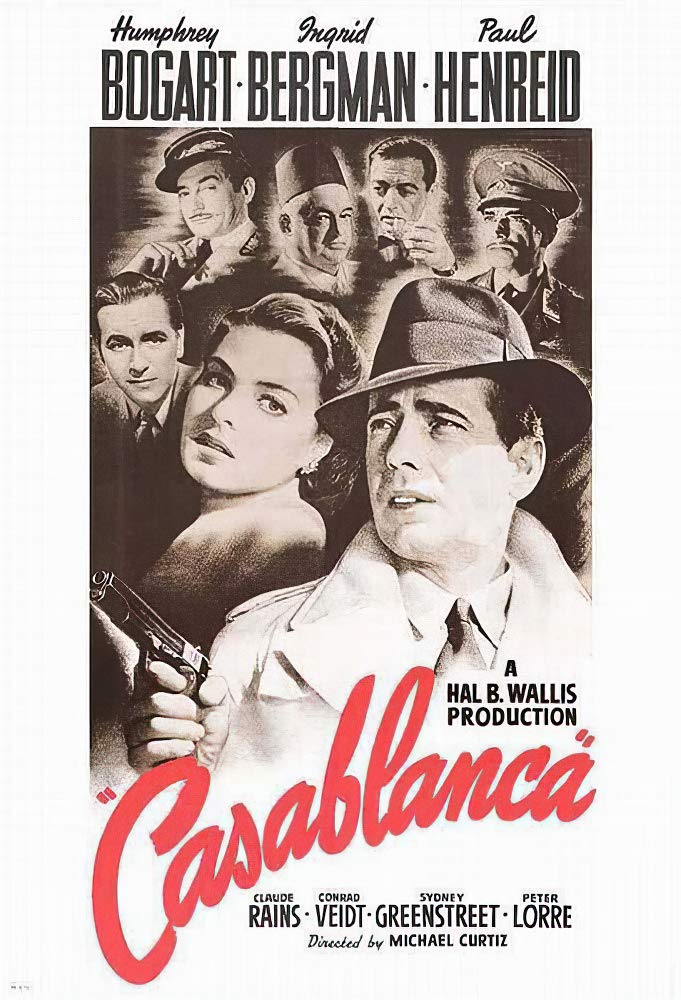
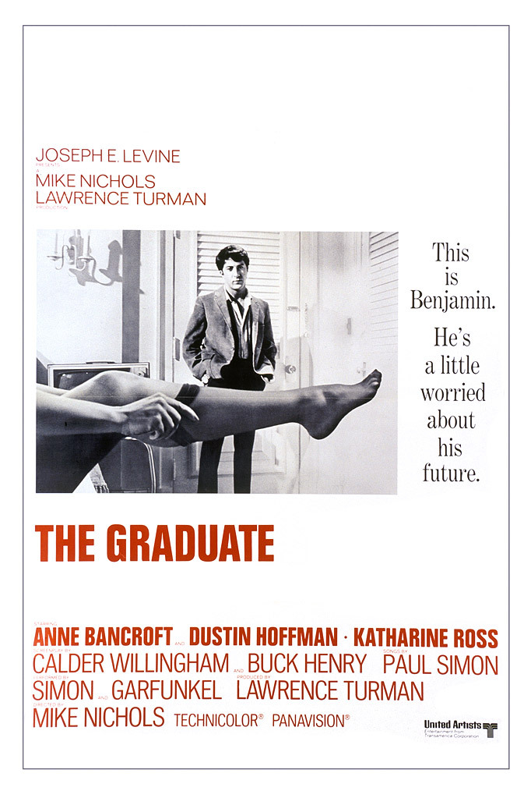
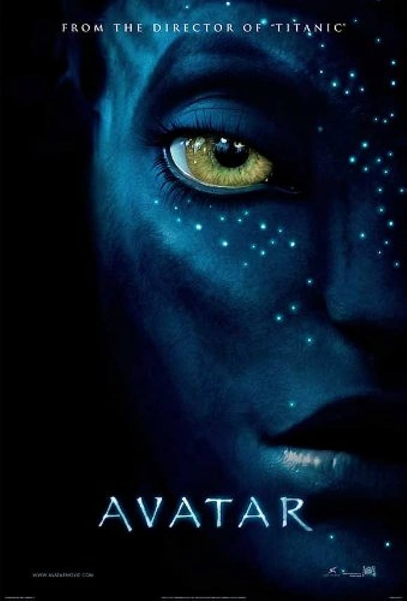
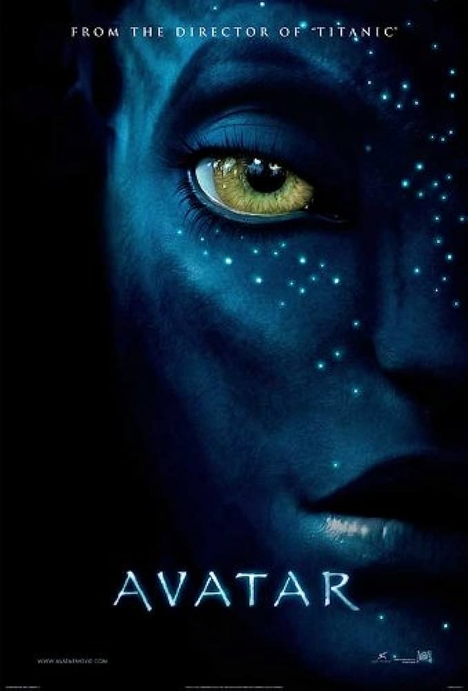
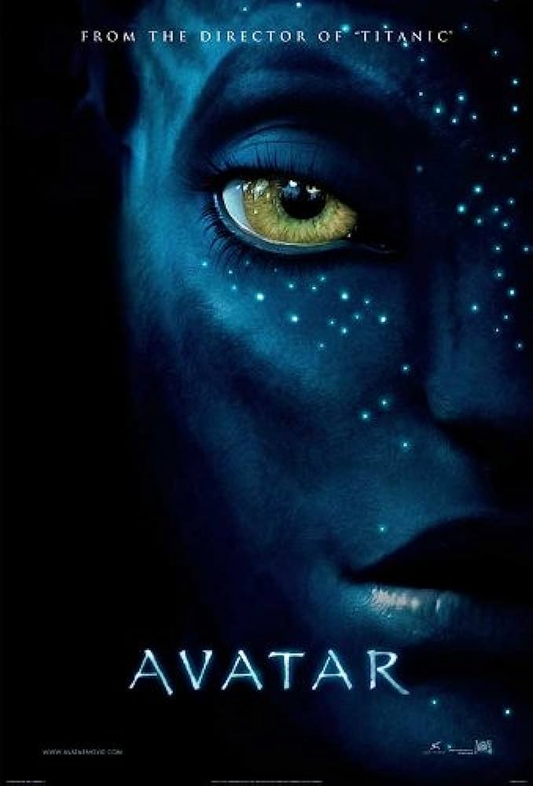

We're a little over 125 years of cinema. Have you ever wondered how the perception of movies have changed over time? Or how we view older movies has changed over time? Or even how much movies are even making? Have movies as an artform peaked? This visualization aims to answer that question.


 

